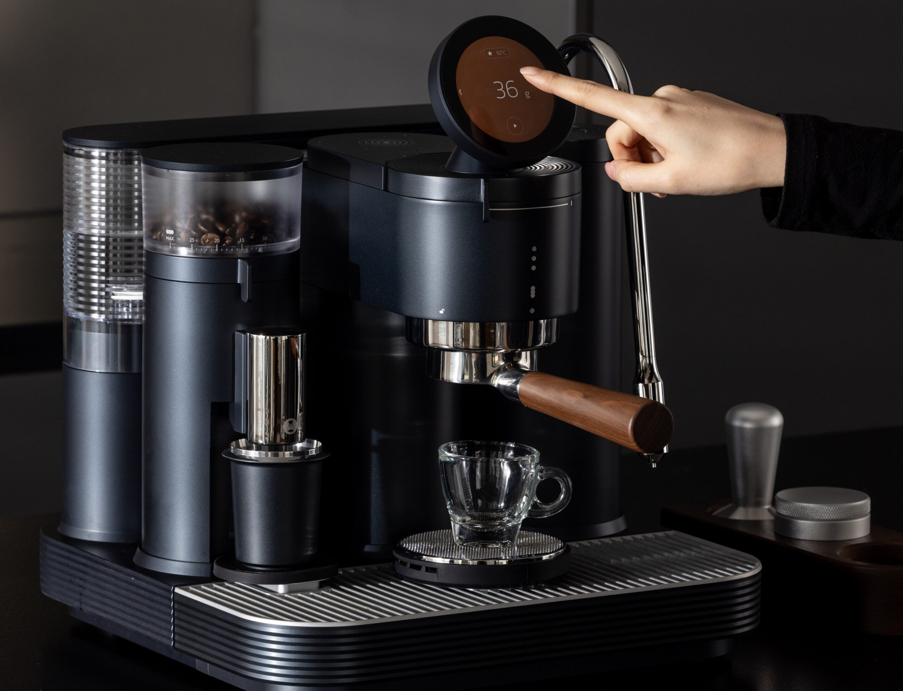
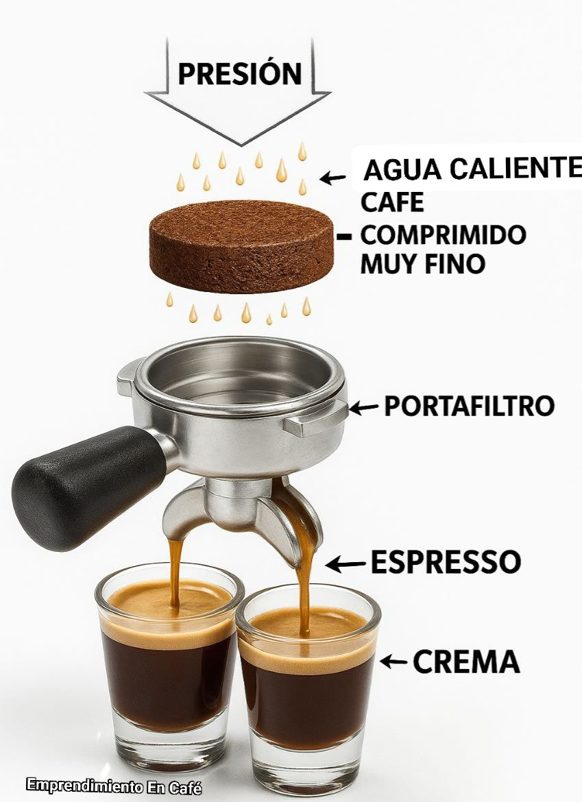
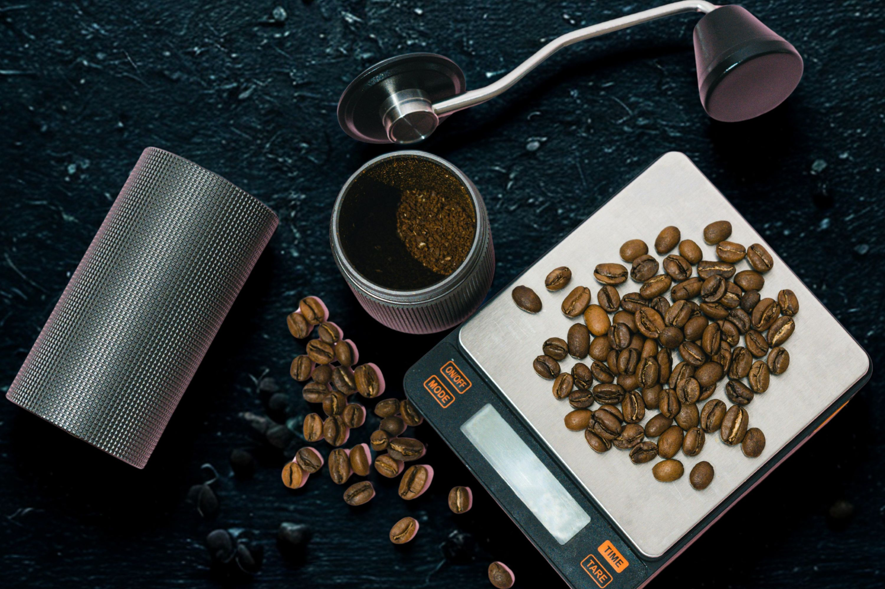
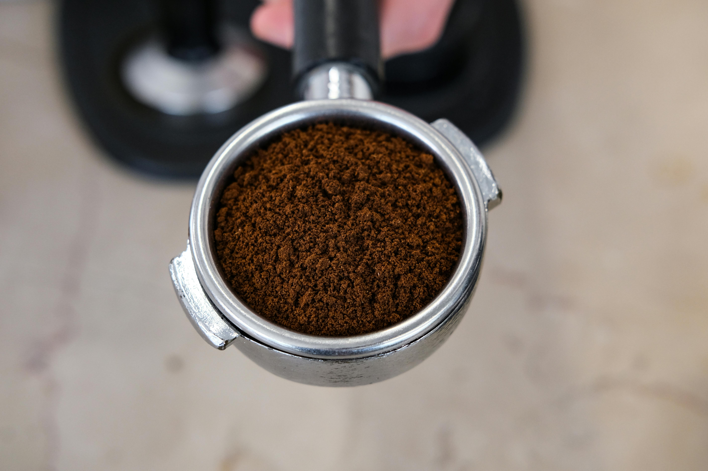
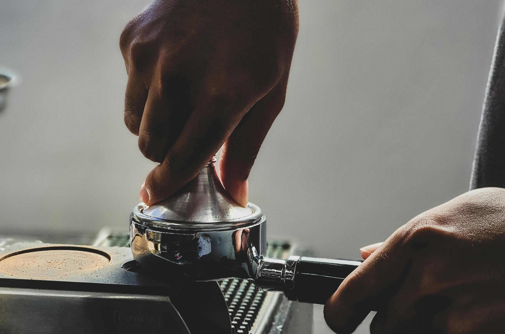
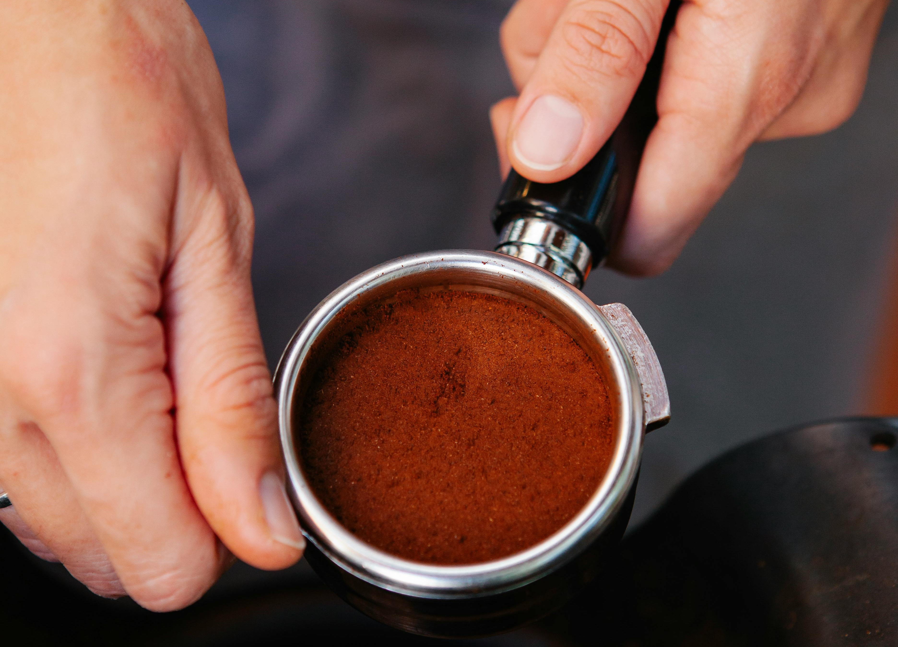
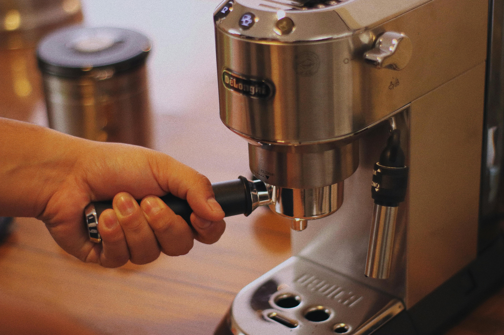
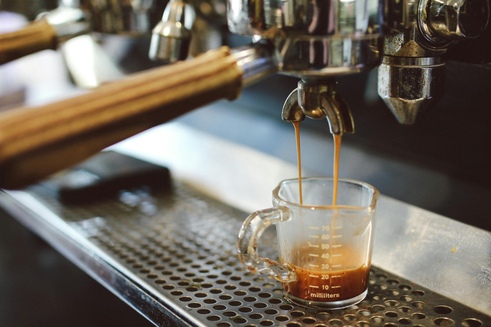

Paso 1 — Precalentar la máquina
Encendé la máquina y esperá 15 a 20 minutos para que alcance la temperatura correcta.

Extracción a presión · Ratio 1:2 · 90–96 °C · 25–30 seg · Molienda muy fina

El espresso es una extracción que fuerza agua caliente a 9 bares de presión a través de café molido muy fino. En 25 a 30 segundos se obtiene una bebida concentrada de unos 36 ml con una capa de crema dorada en la superficie. Es la base del cappuccino, el latte y el cortado.

Encendé la máquina y esperá 15 a 20 minutos para que alcance la temperatura correcta.

Pesá 18 g de café en grano y molelos muy fino, justo antes de prepararlo.

Volcá el café molido en el portafiltro y nivelalo de forma uniforme antes de compactar.

Compactá el café con el tamper aplicando unos 15 kg de presión pareja y perpendicular.

Pasá el dedo por el borde del portafiltro para quitar restos de café antes de insertarlo.

Insertá el portafiltro en la máquina, colocá la taza debajo e iniciá la extracción.

Debés obtener 36 ml en 25 a 30 segundos. El café debe fluir como miel, con crema dorada.

Un espresso verdadero requiere 9 bares de presión mecánica. Sin una máquina no es posible replicarlo exactamente, pero esta alternativa casera se acerca en concentración y cuerpo.
Aunque esta técnica no proporcionará exactamente el mismo sabor y cuerpo que un café espresso preparado con una máquina profesional, es una variante casera que se acerca al resultado deseado y con la que podrás degustar este rico café.